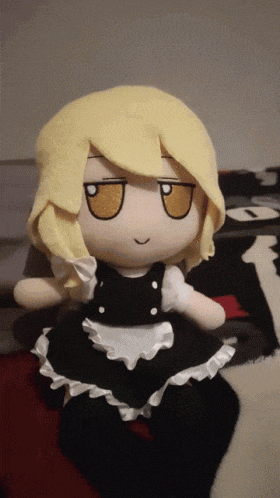
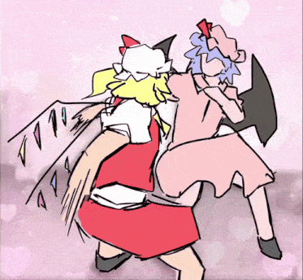
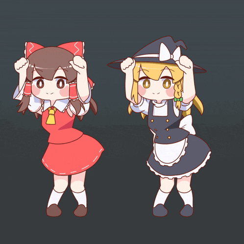

Фанатское творчество и мемы
Главная особенность Touhou Project — невероятно активное сообщество. Создатель серии ZUN с самого начала разрешил фанатам свободно использовать персонажей и музыку для собственного творчества. Благодаря этому вокруг игры появились тысячи анимаций, ремиксов, фанатских игр и мемов, которые знают даже те, кто никогда не запускал оригинал.
Чем занимается сообщество
- Теневой клип «Bad Apple!!» — легендарная чёрно-белая анимация, которую фанаты запускают буквально на всём: от калькуляторов и старых консолей до экрана «Диспетчера задач».
- Плюшевые игрушки Фумо (Fumo) — коллекционные мягкие игрушки персонажей с забавным и слегка невозмутимым выражением лица, ставшие главным героем множества гифок и мемов.
- Музыкальные ремиксы — фанатские группы создают сотни каверов на саундтрек из игр во всех жанрах, от классики и джаза до рока и электроники.
- Юмористические зарисовки — короткие анимации, где суровые сражения заменяются бытовыми ситуациями (например, вечными попытками Рейму собрать пожертвования для храма).
Галерея гифок

Гиперактивная Фумо Чирно |
 Невозмутимая Фумо Мариса |
Bad Apple!! |
|
 Будни Особняка Алой Дьяволицы |
 Победный танец |

Тяжёлые будни мудреца |
Галерея фан-артов
Не закончено...